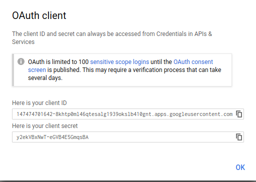
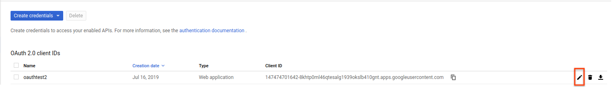

Version v1.4 of the documentation is no longer actively maintained. The site that you are currently viewing is an archived snapshot. For up-to-date documentation, see the latest version.
Setting up OAuth client
3 minute read
Set up OAuth Consent Screen and Client Credential
If you want to use Cloud Identity-Aware Proxy (Cloud IAP) when deploying Kubeflow on Google Cloud, then you must follow these instructions to create an OAuth client for use with Kubeflow.
Cloud IAP is recommended for production deployments or deployments with access to sensitive data.
Follow the steps below to create an OAuth client ID that identifies Cloud IAP when requesting access to a user’s email account. Kubeflow uses the email address to verify the user’s identity.
-
Set up your OAuth consent screen:
-
In the Application name box, enter the name of your application. The example below uses the name “Kubeflow”.
-
Under Support email, select the email address that you want to display as a public contact. You must use either your email address or a Google Group that you own.
-
If you see Authorized domains, enter
<project>.cloud.goog- where <project> is your Google Cloud project ID.
- If you are using your own domain, such as acme.com, you should add that as well
- The Authorized domains option appears only for certain project configurations. If you don’t see the option, then there’s nothing you need to set.
-
Click Save.
-
Here’s an example of the completed form:

-
-
On the credentials screen:
- Click Create credentials, and then click OAuth client ID.
- Under Application type, select Web application.
- In the Name box enter any name for your OAuth client ID. This is not the name of your application nor the name of your Kubeflow deployment. It’s just a way to help you identify the OAuth client ID.
-
Click Create. A dialog box appears, like the one below:

-
Copy the client ID shown in the dialog box, because you need the client ID in the next step.
-
On the Create credentials screen, find your newly created OAuth credential and click the pencil icon to edit it:

-
In the Authorized redirect URIs box, enter the following (if it’s not already present in the list of authorized redirect URIs):
https://iap.googleapis.com/v1/oauth/clientIds/<CLIENT_ID>:handleRedirect<CLIENT_ID>is the OAuth client ID that you copied from the dialog box in step four. It looks likeXXX.apps.googleusercontent.com.- Note that the URI is not dependent on the Kubeflow deployment or endpoint. Multiple Kubeflow deployments can share the same OAuth client without the need to modify the redirect URIs.
-
Press Enter/Return to add the URI. Check that the URI now appears as a confirmed item under Authorized redirect URIs. (The URI should no longer be editable.)
Here’s an example of the completed form:

-
Click Save.
-
Make note that you can find your OAuth client credentials in the credentials section of the Google Cloud Console. You need to retrieve the client ID and client secret later when you’re ready to enable Cloud IAP.
Next steps
- Set up your management cluster.
- Grant your users the IAP-secured Web App User IAM role so they can access the Kubeflow console through IAP.
Feedback
Was this page helpful?
Thank you! Send your feedback to us.
Sorry to hear that. Please tell us how we can improve.